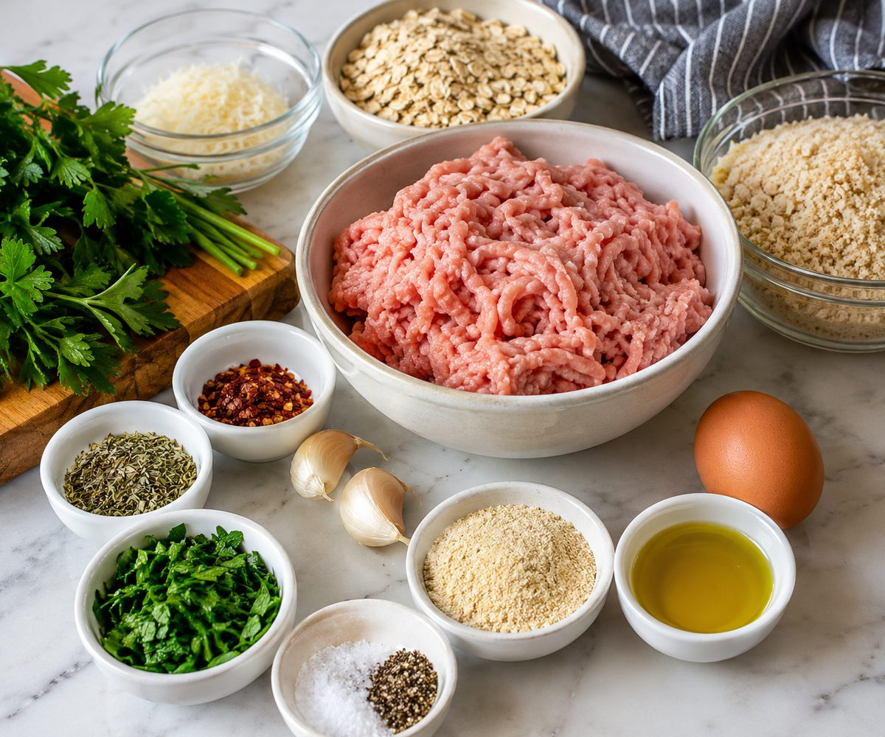
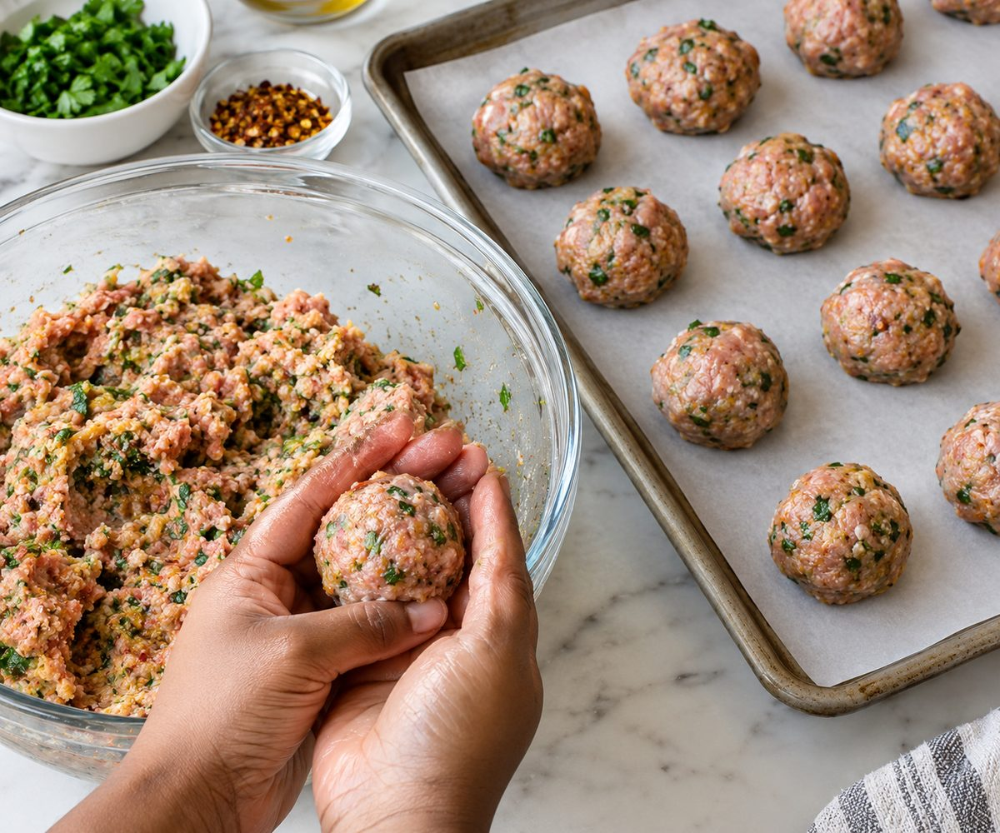
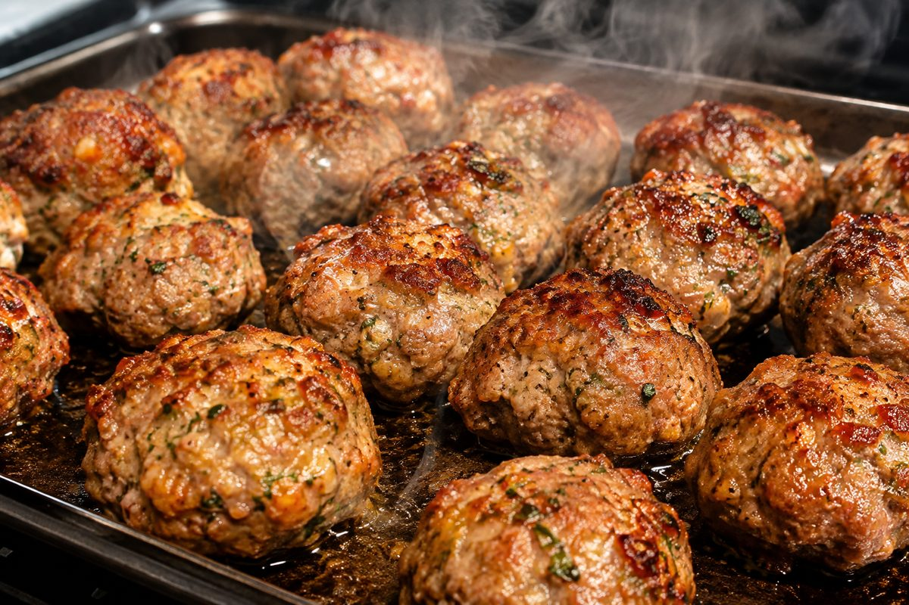
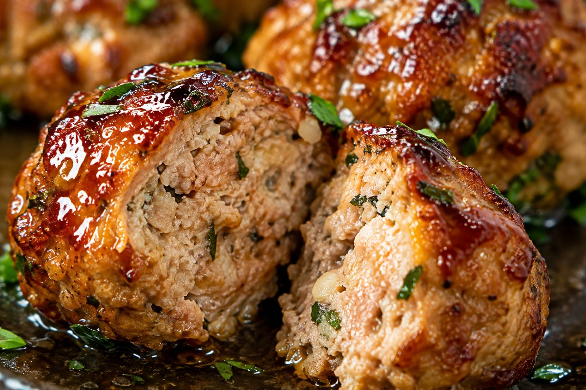
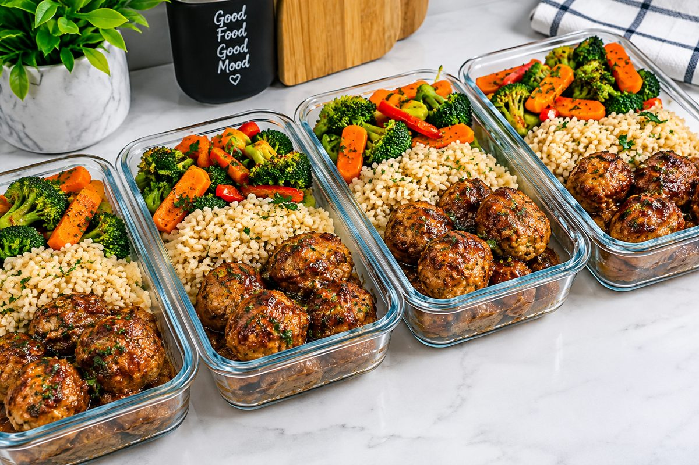

Garlic Herb Turkey Meatball Meal Prep
Estimated per serving: 4 meatballs, one quarter of the sweet potato, rice and greens. Values come from standard nutrition database figures and vary with brands. The optional parmesan is not included.

Baked turkey meatballs are one of the easiest meal prep proteins: no frying, no splatter, and they reheat well. These are packed with parsley, garlic and Italian seasoning, then brushed with a quick honey and tomato glaze near the end so the outside turns glossy and lightly caramelized.
A tray of roasted sweet potatoes, a pot of brown rice and a pan of wilted greens turn them into four complete lunches, with about 34g of protein in each.
Tender meatballs tip: lean turkey dries out easily, so the egg and oats do the work of keeping the meatballs soft. Mix gently and stop as soon as everything is combined.
Ingredients

For the meatballs
- 1.25 lb / 560 g lean ground turkey (turkey mince in the UK), 93% lean
- 1/2 cup / 45 g rolled oats or panko breadcrumbs
- 1 large egg
- 3 cloves garlic, minced
- 1/4 cup / 15 g fresh parsley, chopped
- 1 tsp Italian seasoning (dried oregano and thyme)
- 1/2 tsp red pepper flakes (chilli flakes in the UK), optional
- 1/2 tsp salt
- 1/2 tsp ground black pepper
- 1 tbsp / 15 ml olive oil, for drizzling
For the glaze
- 1 tbsp / 20 g honey
- 1 tbsp / 15 g tomato paste (tomato purée in the UK)
- 1 tbsp / 15 ml water
For the bowls
- 2 medium sweet potatoes (about 14 oz / 400 g), cut into 3/4 inch / 2 cm cubes
- 2 cups / 380 g cooked brown rice
- 3 cups / 90 g fresh spinach or kale
- 1 tbsp / 15 ml olive oil, plus salt and pepper, for the sweet potatoes
- Optional: 2 tbsp / 15 g grated parmesan, sprinkled on after baking
Notes for UK and European cooks
- Oven: 400°F is 200°C, or 180°C in a fan oven (gas mark 6).
- Sheet pan: this is a baking tray in the UK and Europe. Parchment paper is called baking paper.
- Allergens: contains egg. Panko contains wheat, and oats can carry traces of gluten, so use certified gluten-free oats if needed. The optional parmesan contains milk.
- Budget tip: turkey mince, sweet potatoes and brown rice are usually cheapest at discount supermarkets such as Aldi and Lidl.
Instructions
- Start the rice first if you are cooking it from scratch, since brown rice takes about 40 minutes. Preheat the oven to 400°F / 200°C (180°C fan). Toss the sweet potato cubes with 1 tbsp olive oil, salt and pepper, spread them on a large sheet pan (baking tray), and roast for 25 to 30 minutes, turning once.
-
In a large bowl, combine the turkey, oats, egg, garlic, parsley, Italian seasoning, red pepper flakes, salt and pepper. Mix gently with your hands until just combined. Shape into 16 equal meatballs.

Shape 16 even meatballs so they cook at the same rate. -
After the sweet potatoes have been in the oven for 10 minutes, place the meatballs on a second parchment-lined tray, spaced apart. Drizzle with the 1 tbsp olive oil and bake for 12 minutes.

Space them out so the sides brown instead of steam. -
Stir together the honey, tomato paste and water. Brush it over the meatballs and bake for 6 to 8 more minutes, until browned and the center reaches 165°F / 74°C. Rest for 5 minutes, then cut one open to check that it is juicy with herbs visible throughout.

Cut one open to check. It should be juicy, with herbs throughout. - Heat a large pan over medium heat. Add the spinach with a splash of water and stir for 1 to 2 minutes until wilted. Season with a pinch of salt.
-
Divide the rice, sweet potatoes and greens across 4 containers and add 4 meatballs to each. Let them cool uncovered for 15 to 20 minutes before sealing, and put the rice in the fridge within 1 hour.

Four lunches, ready for the week. For a different look, swap in roasted carrots and broccoli, and couscous or quinoa for the rice.
Storage and Reheating
- Fridge: up to 3 to 4 days in sealed containers at or below 40°F / 4°C (US guidance). Cooked rice is the exception in the UK. The NHS advises cooling it within 1 hour, keeping it in the fridge for no more than 1 day, and reheating it only once. If you are in the UK or prefer to be cautious, freeze the portions you will not eat the next day.
- Freezer: up to 2 months. Thaw overnight in the fridge before reheating.
- Reheat: microwave for 2 to 3 minutes with the lid vented, until piping hot all the way through.